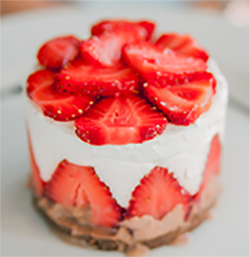
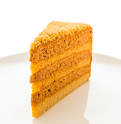

Bolo de morango
- Ovos e farinha de trigo
- Fermento em pó e morango
- Açúcar
- Leite quente
Bata os ovos, farinha, açucar e o leite quente juntos. Coloque a misura e leve para assar por 30 minutos. Após estar assada adicione os morangos a gosto.
Boolo de chocolate
- Ovos e farinha de trigo
- Óleo e açucar
- Fermento em pó e água
- Achocolatado em pó
Bata os ovos, o açúcar, o óleo, o achocolatado e a farinha de trigo. Despeje a massa em uma tigela e adicione a água quente e o fermento, misturando bem. Leve para assar por 40 minutos.
Bolo de cenoura
- Ovos e farinha de trigo
- Cenoura ralada e açucar
- Fermento em pó
- Açúcar
Em um liquidificador, adicione a cenoura, os ovos e o óleo. Acrescente açúcar, trigo, fermento em pó e a cenoura e bata por mais 5 minutos. Leve para assar por 40 minutos.